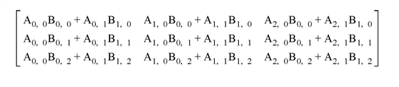
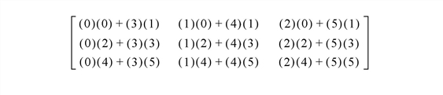
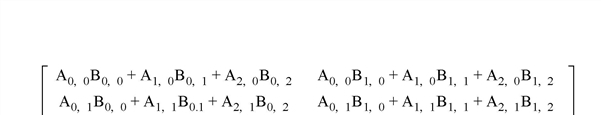

IDL provides a variety of mechanisms for working with multidimensional data sets. Understanding these mechanisms requires a familiarity with linear algebra and the concept of a two-dimensional data set.
Note: There are two terms commonly used to refer to two-dimensional data sets: array and matrix . People who work with images tend to call two-dimensional data sets arrays, while mathematicians tend to call two-dimensional data sets matrices. The terms are interchangeable, but the different conventions assumed by people who use them may lead to confusion.
Consider a two-dimensional data set, with dimensions m and n . In a computer, the data from this data set is stored in a unidimensional set of memory addresses; what makes the data “two-dimensional” is the way the individual elements are indexed by the software that accesses the data in memory. This topic is discussed in detail in Columns, Rows, and Array Majority ; if you are unsure of your understanding of the process of mapping multidimensional data into unidimensional computer memory, please read that section carefully.
There are two possible ways to depict a two-dimensional data set on paper — row by row or column by column. For example, the standard mathematical representation of an m x n data set is shown in the next figure, with m rows and n columns:
|
|
Here, the first dimension ( m ) represents the row index, and the second dimension ( n ) represents the column index. Thus, if the data set is represented using this notation, the term Array[3,2] refers to an element that is four rows down from the top row and three columns to the right of the leftmost row. (Note that indices are zero-based.)
The next figure depicts the standard image-processing representation of the same data set, with m columns and n rows:
|
|
Here, the first dimension ( m ) represents the column index, and the second dimension ( n ) represents the row index. Thus, if the data set is represented using this notation, the term Array[3,2] refers to an element that is four columns to the right of the leftmost column and three rows down from the top row. This is the representation used by IDL.
It is important to understand that these are two views of the same data; all that has changed is the notational convention applied. Why is this notational convention important? Because when reading or writing data in a two-dimensional data set, performance improves if elements that are contiguous in the computer’s memory are accessed consecutively. Incrementing the index of the first dimension by one shifts one “slot” in computer memory, whereas incrementing the index of the second dimension by one shifts a number of “slots” at least as large as the size of the first dimension.
Note: The terms column-major and row-major are commonly used to define which dimension of a two-dimensional array represents the column index and which represents the row index. These terms are defined and discussed in detail in Columns, Rows, and Array Majority .
You should be aware that many numerical algorithms — especially those that are written in a row-major language such as C or C++ — assume data is indexed (row, column). Since IDL assumes data is indexed (column, row), it is important to keep this distinction in mind. In order to work with data indexed (row, column), you can use IDL ’s TRANSPOSE function to interchange the order of the indices.
Note that it is possible for an array to be indistinguishable from its transpose. In this case the number of columns and rows are identical and there is a symmetry between the rows of the array and the columns of its transpose. Arrays satisfying this condition are said to be symmetric . When dealing with symmetric arrays the use of the TRANSPOSE function is unnecessary, since A T = A .
IDL has two operators used to multiply arrays. To illustrate the difference between the two operators, consider the following two arrays:
; A 3-column by 2-row array:
A = [ [0, 1, 2],$
[3, 4, 5] ]
; A 2-column by 3-row array:
B = [ [0, 1],$
[2, 3],$
[4, 5] ]
The # operator computes array elements by multiplying the columns of the first array by the rows of the second array. The resulting array has the same number of columns as the first array and the same number of rows as the second array. The second array must have the same number of columns as the first array has rows.
For example, consider the arrays defined above:
We obtain the elements of A # B as follows:

Or, using the actual values from the arrays:

Therefore, when we issue the following command:
PRINT, A#B
IDL prints:
3 4 5
9 14 19
15 24 33
Tip: If one or both of the arrays are also transposed, such as TRANSPOSE(A) # B, it is more efficient to use the MATRIX_MULTIPLY function, which does the transpose simultaneously with the multiplication.
While the definition of the IDL # operator may appear to be at odds with the standard mathematical definition of matrix multiplication — namely, that the operator multiplies each row of the first matrix by each column of the second matrix — this is a case of slightly imprecise terminology. The confusion arises from the mappings of the words “row” and “column” — which refer to elements in a two-dimensional entity called an array or a matrix — to the one-dimensional vector of values stored in computer memory. In reality, what the matrix multiplication operator does is multiply the elements of the first dimension of the first array/matrix by the elements of the second dimension of the second array/matrix. IDL’s convention is to consider the first dimension to be the column and the second dimension to be the row, whereas the standard mathematical convention considers the first dimension to be the row and the second dimension to be the column. For a more complete discussion of this topic, see Columns, Rows, and Array Majority .
The ## operator computes array elements by multiplying the rows of the first array by the columns of the second array. The resulting array has the same number of rows as the first array and the same number of columns as the second array. The second array must have the same number of rows as the first array has columns.
For example, consider the arrays defined above:
We obtain the elements of A ## B as follows:

Or, using the actual values from the arrays:
Therefore, when we issue the following command:
PRINT, A##B
IDL prints:
10 13
28 40
When using the # and ## operators to multiply vectors, note the following:
Note the following with regard to the array multiplication operators:
The MATRIX_MULTIPLY and MATRIX_POWER routines are also available:
Note: Also see Array Manipulation for a list of other array manipulation routines.